In this homework, I implemented the logic behind building Bezier curves and surfaces to make 3D triangle meshes. I've also implemented the logic for basic mesh operations such as flipping and splitting edges, which led to the implementation of loop subdivision. For extra credit, I've also created a new operation to split faces for the purpose of implementing sqrt-3 subdivision. By far the most interesting thing about working on this assignment was the use of the half-edge data structure to traverse the entire mesh. After messing around a bit, I figured out a pattern to ensure that the mesh operations correctly assigned pointers which involved making a diagram, obtaining all the elements, creating new elements, and reassigning them last. It was also interesting seeing the different forms of subdivisions and how the outcomes of each were different.
de Casteljau's algorithm is used to evaluate a Bezier curve of degree \(n\), defined by \(n+1\) control points. Through recursive linear interpolation between each neighboring pair control points, it eventually finds a single point on the Bezier curve. The interpolation is controlled by a parameter \(t\) which ranges from \(0\) to \(1\). Performing the algorithm over the range of \(t\) gets you what is essentially all points on the Bezier curve, basically drawing out the curve.
To implement the algorithm, I only needed to implement a single recursive step of it with BezierCurve::evaluateStep.
Given the points and the parameter \(t\), I simply iterate through the points pairwise using a for loop.
On each pair of points \(a\) and \(b\), I calculate the interpolated point using linear interpolation:
\((1-t) * a + t * b\). I add this interpolated point to a vector intermediatePoints which
will eventually hold all the interpolated points calculated between each pair of neighbors. This concludes
a single step of the algorithm, so I return intermediatePoints.
|
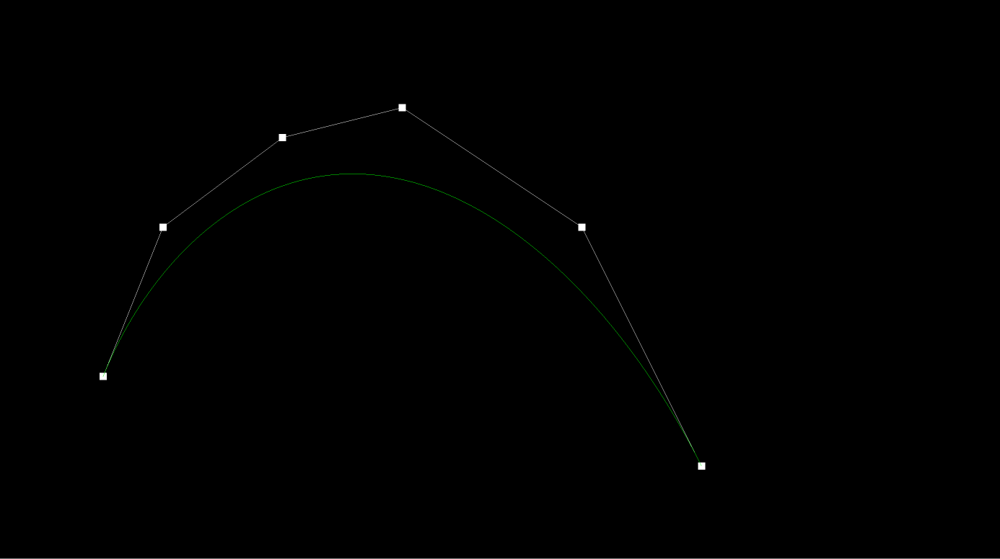 |
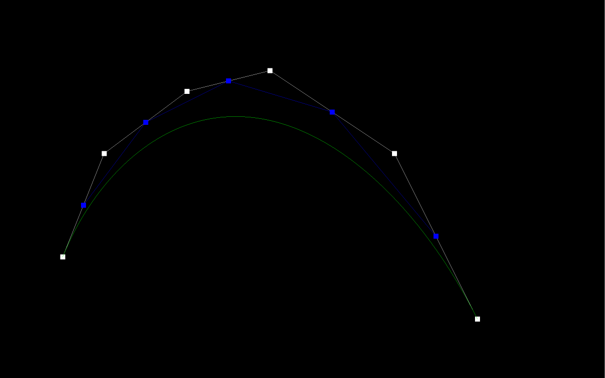 |
|
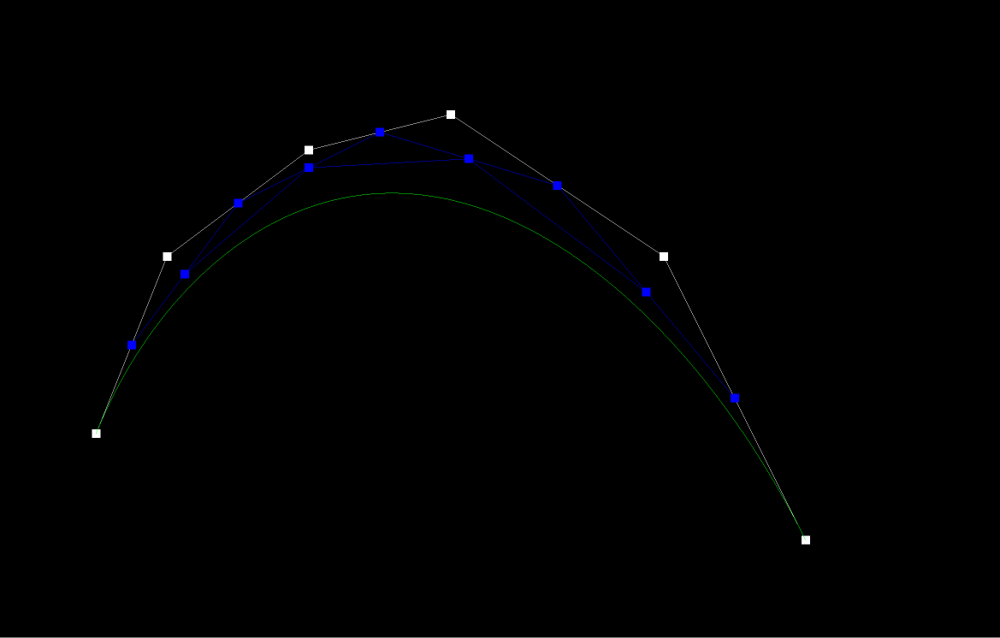 |
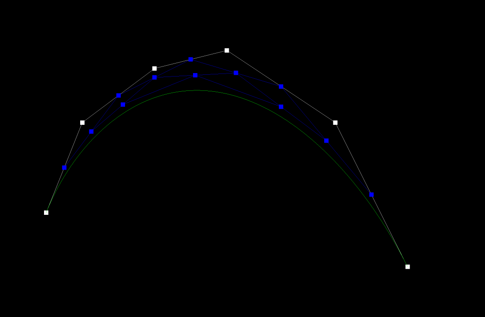 |
|
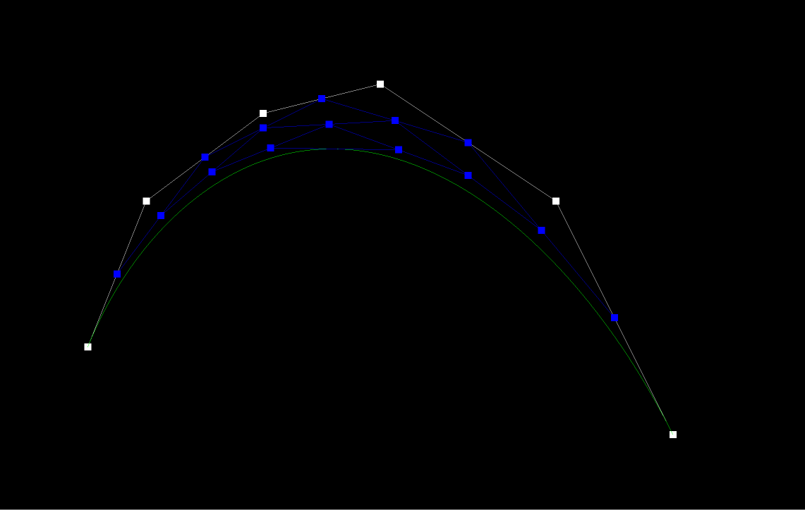 |
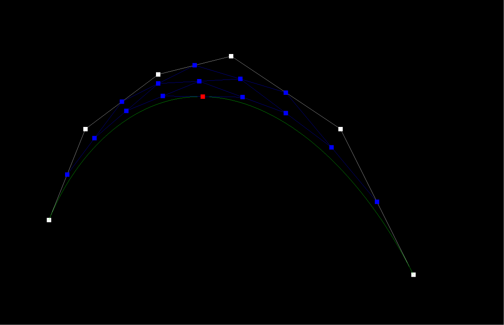 |
|
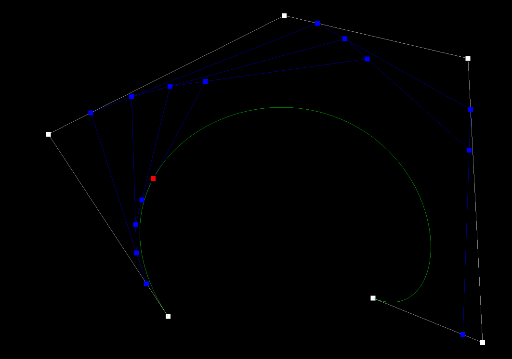 |
Bezier surfaces are defined by a grid of \(n \times n\) control points and parameters \(u\) and \(v\). An alternative way to view this is \(n\) Bezier curves, each represented by one of the rows of control points with parameter \(u\). Since this results in \(n\) points when using de Casteljau on each curve, we can use them as control points to represent another Bezier curve with parameter \(v\) to find a single point on the overall Bezier surface at parameters \(u\) and \(v\).
For implementation, it involved modifying three functions, BezierPatch::evaluateStep,
BezierPatch::evaluate1D, and BezierPatch::evaluate. The first function,
BezierPatch::evaluateStep, works exactly the same as the previous part with the only difference
being the use of Vector3D instead of Vector2D.
For BezierPatch::evaluate1D, it is simply a matter of performing all steps of the
de Casteljau algorithm. The algorithm finishes once it finds a single point so I simply used
a while loop to keep calling BezierPatch::evaluateStep, checking the size of the vector
returned. If it is not one, I keep calling the function on the returned points until it
does return with only one intermediate point.
Lastly, to tie it all together, the implementation of BezierPatch::evaluate involves
iterating through each row of control points, calling BezierPatch::evaluate1D on each row
with parameter \(u\). I save the returned points in a vector so that after all rows are iterated through,
I have the control points needed to perform one final call to BezierPatch::evaluate1D, passing in
those points and parameter \(v\) and returning whatever point is returned in this call.
|
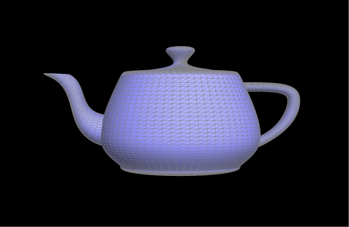 |
To implement Vertex::normal, I first obtained the half-edge of the vertex we are at.
I also created another variable sum to hold the summation of all the area-weighted normals
of the surrounding faces.
Using the half-edge and a do-while loop, we can iterate through all surrounding faces by traversing from the half-edge (pointing away from the vertex) to its twin and then the next half-edge. This reaches the next half-edge pointing away from the vertex which is also in the next face. We can continue this loop until we reach the original half-edge we started with.
For each half-edge (pointing from the vertex), we check that it is not in the boundary (if so we just move on). Next, we obtain the three vertices of the face by traversing to the next half-edge and obtaining its vertex.
Now that we have all three vertices of the face (\(v1, v2, v3\)), we can calculate the normal and area. Let \(v1\)
be the vertex we are currently calculating the area-weighted vertex normal for. The most important
thing to calculate is \((v2 - v1) \times (v3 - v1)\). This is simply the cross product of the two vectors
pointing from our vertex to the other two vertices in the face. This is useful because it represents
the unnormalized normal (not unit length) and its magnitude represents double the area of the face.
To get area, I simply get the norm (magnitude or Euclidean length) and divide by two. If we want
to make the normal unit length, we simply call the member function unit().
With this, we can multiply the area by the unit length normal to get the area-weighted normal of the face which
we can add to sum.
After iterating through each face and summing up their area-weighted normals in sum,
we can simply normalize it by calling unit() (since it is a Vector3D)
to obtain the result we return.
|
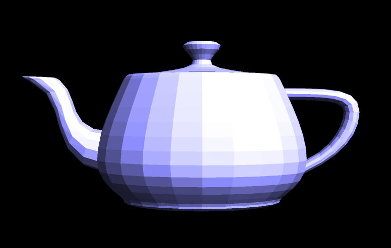 |
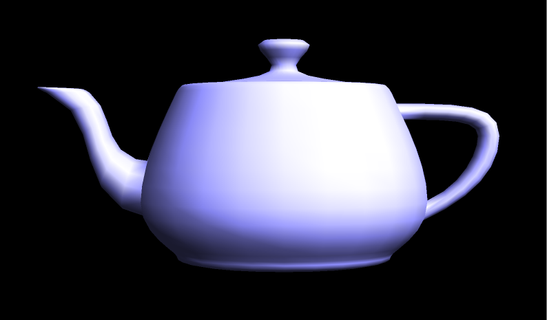 |
The overall implementation of the edge flip operation relies on the principle of updating everything, even if it hasn't changed. As such, I used the half-edge to obtain every nearly single element nearby. Drawing a diagram also helped reveal which elements I needed to possibly worry about. In total, for the two triangles connected to the half-edge (specifically the edge of the half-edge), I updated 6 half-edges, 2 faces, 4 vertices, and 1 edge. I knew for certain that the outer edges of both triangles would not need to be modified as their associated half-edges never move to different vertices.
My overall implementation is first checking that the edge we want to flip isn't in the boundary (otherwise just return
an empty EdgeIter()). Then, I gather all the elements I plan to modify (as I listed above). Lastly,
I update each element by category (faces, half-edges, etc.). For half-edges, I update with setNeighbors
while for any other kind of element I update halfedge() since that's the only thing that can be changed
in an edge flip. Updating category by category makes it easier to track any missing elements I forgot to account for.
After updating, I simply return the same EdgeIter that was passed in, since my updates guarantee
this iterator points to the flipped edge.
|
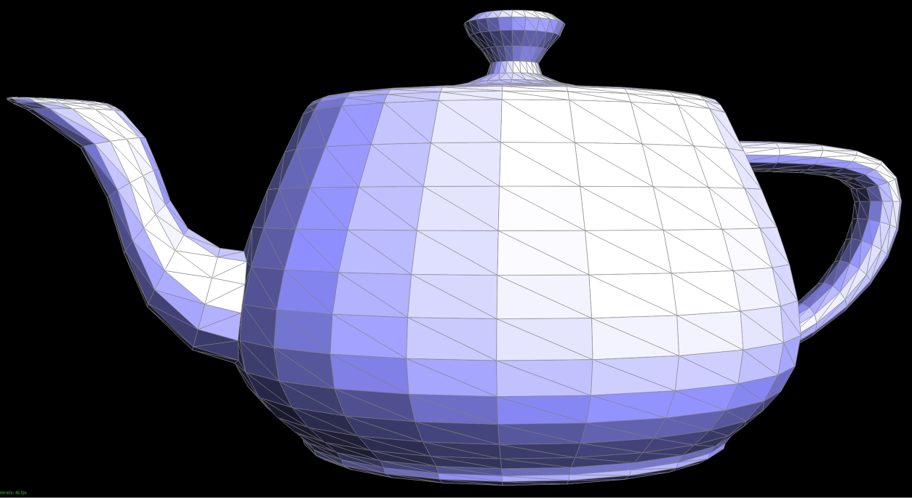 |
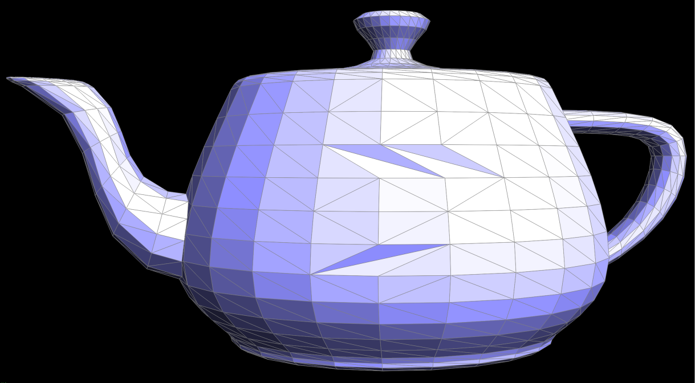 |
Implementing edge split builds off the same principles I used to implement edge flips. I drew a diagram before
starting to observe how the edge split modifies the triangles.
Then, I gathered all existing elements to be modified which ended up being the same elements as the edge flip.
Similarly I check if the edge is a boundary. If it isn't, I then create all new elements which ended up
being 2 faces, 3 edges, 6 half-edges, and 1 vertex. I proceeded to update all the elements, both existing and new,
by category. The same rule applies where I only need to modify halfedge() unless the element is a half-edge,
in which case I use setNeighbors. The only exception is the new vertex, whose position is updated to be the
center of the edge (averaging the positions of the edge's two vertices). I also return this vertex's iterator.
Overall, the work took more time than implementing edge flip since there are more elements to update. I actually didn't experience as many debugging issues since by this point I figured out the process to update elements in a way that basically guarantees it's correct.
|
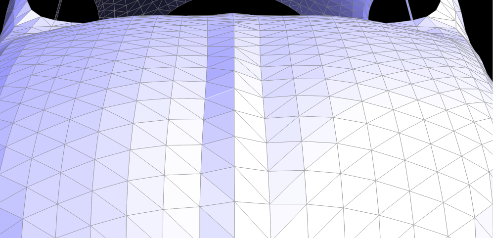 |
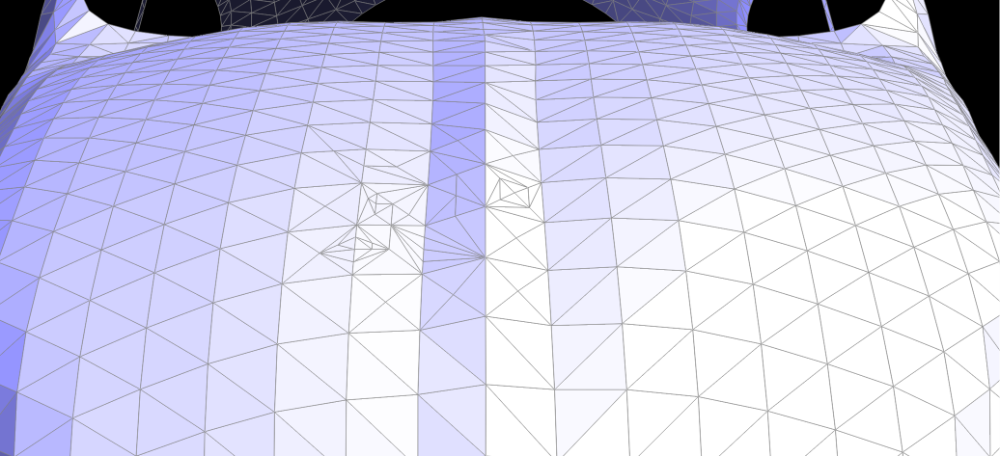 |
|
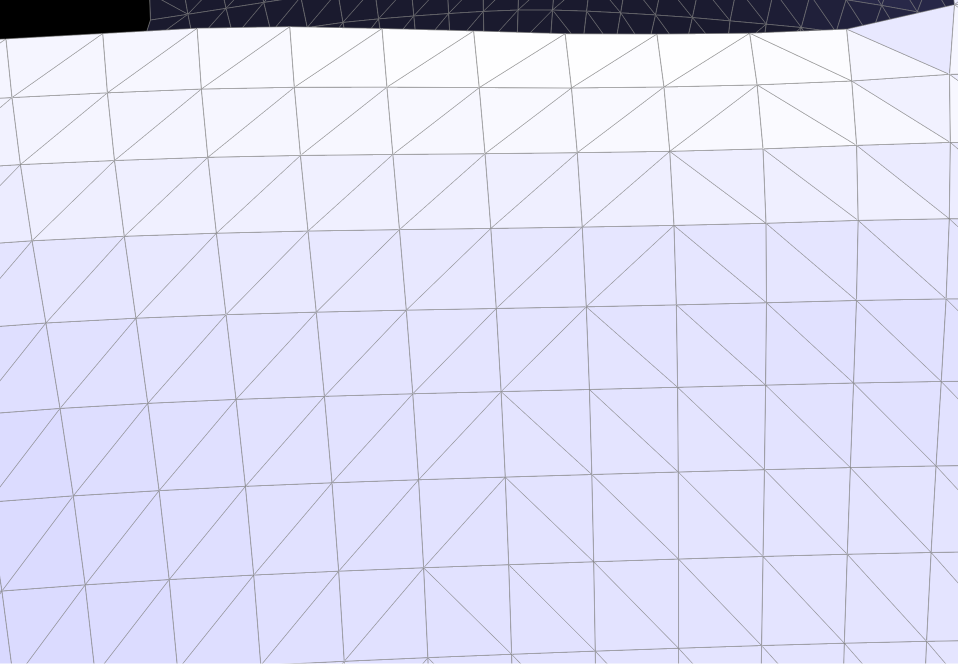 |
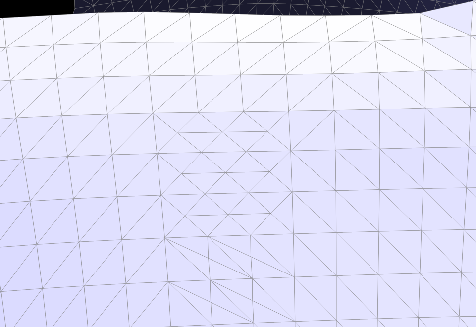 |
Instead of ignoring the operation on boundary edges, I also check if one of two faces is not a boundary. While this may
be redundant, it gives a bit of guarantee that I can split one of the faces. If there happens to be a boundary edge
between two boundary faces, then I return the empty VertexIter(). Moving forward, from the two half-edges
associated with the edge we are splitting, I locate the half-edge that is inside the non-boundary face using a ternary operator.
From there, I follow the same process of gathering elements, creating new elements, and updating categorically.
The vertex is updated the same, being put at the center of the edge and updating is mostly the same as it is in the original case, but
just happening on one of the faces.
This case does bring a special challenge involving the boundary face we are not splitting. Since we split the edge, we also need to update and add half-edges in the boundary face to make sure it's correct. In a nutshell, this is simply done by saving the boundary half-edge \(be0\) (the other half-edge from the edge we split) and its next half-edge \(be0\_next\). I create a new half-edge \(be1\) and modify it along with \(be0\) so that \(be1\) is preceded by \(be0\) and succeeded by \(be0\_next\). Other stuff such as twins, vertices, edges, and faces can also be updated using the elements we've saved/created.
|
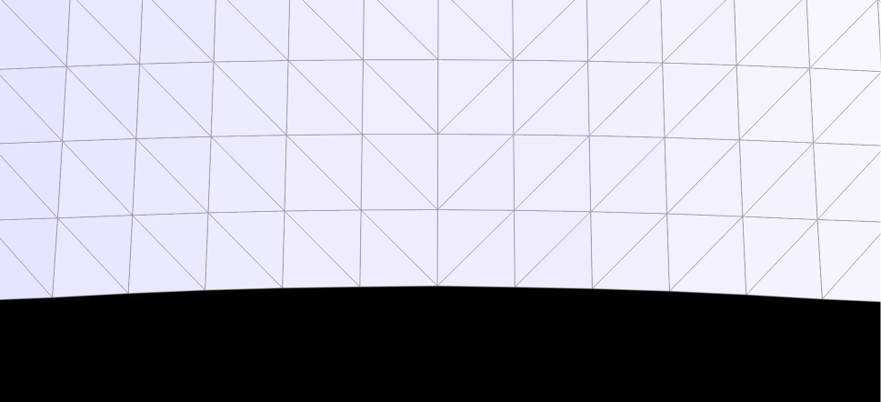 |
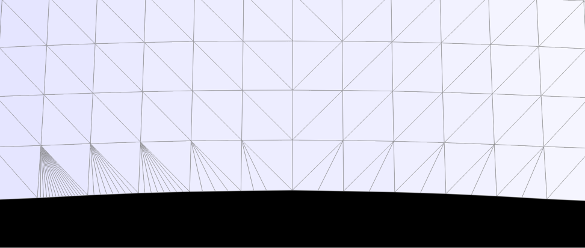 |
To implement Loop subdivision, I split the whole process into five sections:
old vertices, new vertices, split, flip, and set. The first two sections, old and new vertices, involve
calculating new vertex positions after subdivision and storing it in each vertex's newPosition
field. The third and fourth section, split and flip, involve using mesh operations to achieve the subdivision.
The fifth section, set, simply sets every vertex's position to their newPosition.
To handle old vertices, I simply iterate through all vertices in the mesh. If it is not a boundary vertex,
I can calculate its new position with the equation \((1 - nu)v + uk\), where \(n =\) the degree of
the vertex, \(u = \frac{3}{8n}\) if \(n \neq 3\), else \(u = \frac{3}{16}\), \(v =\) the vertex position, and \(k =\) the sum of all
the positions of neighboring vertices. I chose \(u\) using a ternary operator on the condition \(n == 3\), picking the
appropriate value depending on the outcome. To obtain \(k\), we simply use the same half-edge iteration described in
Part 3 to reach every half-edge that comes from the vertex which in turn lets us also reach every half-edge
pointing towards the vertex through twins. The vertices of these twins are therefore neighboring vertices,
which we can sum up the position of to obtain \(k\) and fully compute the new position for every old vertex in the mesh.
This gets stored in each vertex's newPosition field.
Lastly, we mark all these vertices as old by setting their isNew field to false.
To handle new vertices, I iterate through all edges in the mesh. If it is not a boundary edge, I can use the equation
\(\frac{3}{8}(v0 + v1) + \frac{1}{8}(v2 + v3)\). \(v0\) and \(v1\) are the vertices of the edge, while \(v2\) and \(v3\) are
the "opposite" vertices, meaning that they are the vertices connected to the two faces of the triangles
that are not connected to their shared edge, a.k.a. the edge we'd be finding the vertex's position of after subdivision.
All these vertices can simply be found through half-edge traversal, more specifically through the edge's half-edges
which each can traverse around two faces. After computing with the formula, we store it in the edge's
newPosition field.
Splitting is relatively simple. For Loop subdivision, we want to split edges in the original mesh, which means
all edges whose two vertices are not new, a.k.a. when isNew is false.
I iterate through all edges in the mesh (safely using a while loop and storing the next edge)
and simply obtain the vertices of each edge. If both are old, we split the edge and set this new vertex's fields.
The newPosition field will match the newPosition field of the edge and isNew
is set to true. Since we also create new edges, we need to mark them as being old or new for flipping later.
I chose to modify the splitEdge method to set the fields for the edges during the updates.
Flipping is also simple as we just need to check if the edge we flip is new and if its vertices are an old and new one.
Much like splitting, I iterate through all edges in the mesh (safely) and check if the edge's isNew field
is true. To check if both vertices are a new and old vertex respectively, we can simply
compare their isNew fields using !=, which returns true if both are different.
If the conditions pass, we flip the edge and do the same checks for all edges.
Setting the positions is the easiest section since all I needed to do was iterate through every vertex
and set its position to newPosition.
I noticed that sharp corners and edges of a mesh are rounded out after subdivision. It seems, however, that by splitting faces near these edges and corners, it adds more faces closer to them which helps make the overall averaging in that area stay close to what it was before. The screenshots below help demonstrate this effect.
|
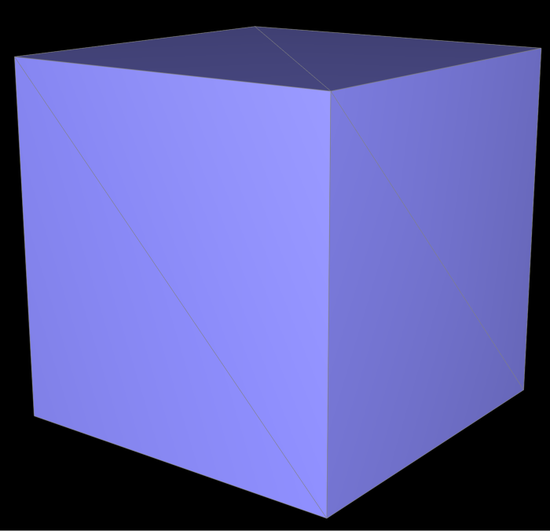 |
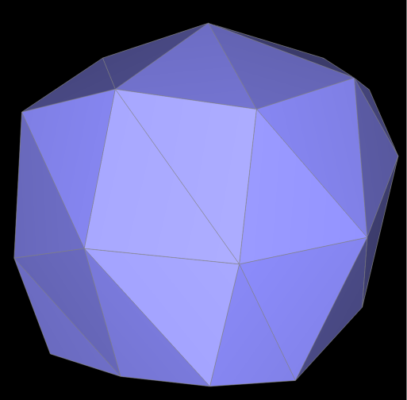 |
|
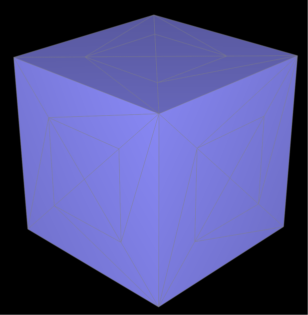 |
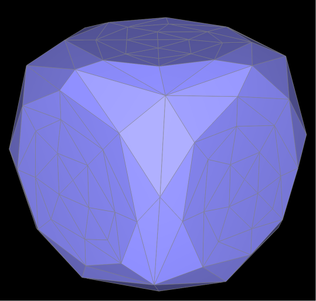 |
Another interesting observation with the cube is the fact that it becomes asymmetrical after enough Loop subdivisions. I theorize that this effect comes from the fact that each vertex of the cube is connected to its neighbors differently. For example, some vertices connect diagonally to the vertex in the opposite corner of the same side of the cube while the rest do not. As a result, the new positions of these vertices vary when subdividing, leading to asymmetry.
|
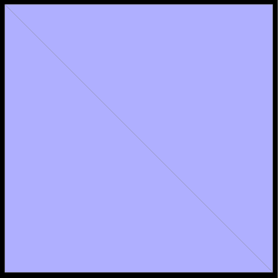 |
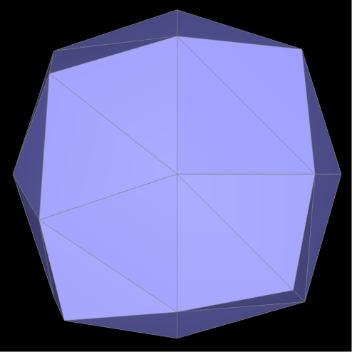 |
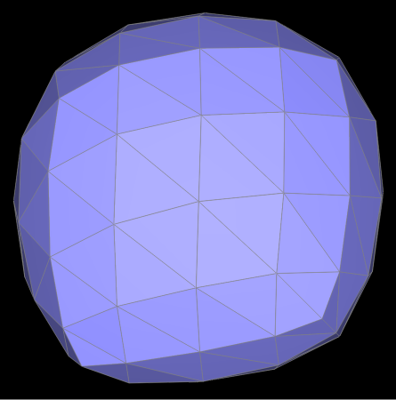 |
I found that splitting every diagonal edge of the cube so that there is an X pattern on each side prevents this since it ensures each vertex is connected to all neighbors, including its diagonal neighbor. Since the cube is symmetric, this means every vertex will have the same "weighing" which makes the cube subdivide symmtrically.
|
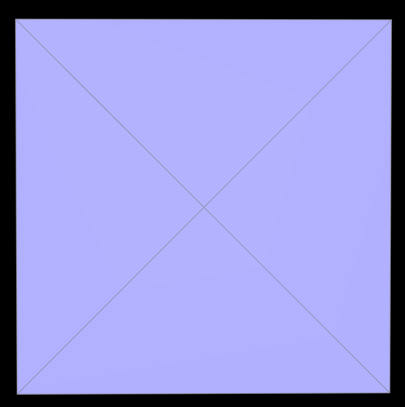 |
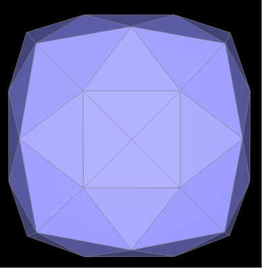 |
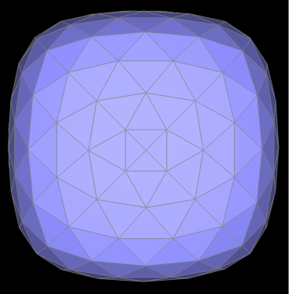 |
In order to make the Loop subdivision work with boundaries, I added extra logic to handle boundary cases in
the old and new vertex sections. The other sections, split, flip, and set, either do nothing with boundary cases
or already handle it in the case of split. For the formulas I use in computing newPosition for these
boundary cases, I found them through this page:
graphics.stanford.edu/~mdfisher/subdivision.html
To account for old boundary vertices, we need to use the alternative formula
\(\frac{3}{4}v + \frac{1}{8}(v0 + v1)\), where \(v = \) the vertex we are examining and
\(v0, v1\) are neighboring boundary vertices. The trickiest part of this case is finding the neighboring
boundary vertices. To find them, I iterated with half-edges, starting from the half-edge of \(v\), until I reached a half-edge that is a boundary.
In this particular case, there only exists one half-edge like this that comes from \(v\).
I can use this as a point of reference to traverse and obtain \(v0, v1\).
Once we find all the vertices we need, I compute the newPosition for boundary vertex \(v\).
For new vertices, in the case that our edge is on the boundary, we can simply just
use the edge's midpoint as the newPosition for the vertex. This is just the average between
the two vertices of the edge, something that we've done in Part 5.
Now that we've made sure boundary vertices will have a newPosition, Loop subdivision
can support meshes with boundaries.
|
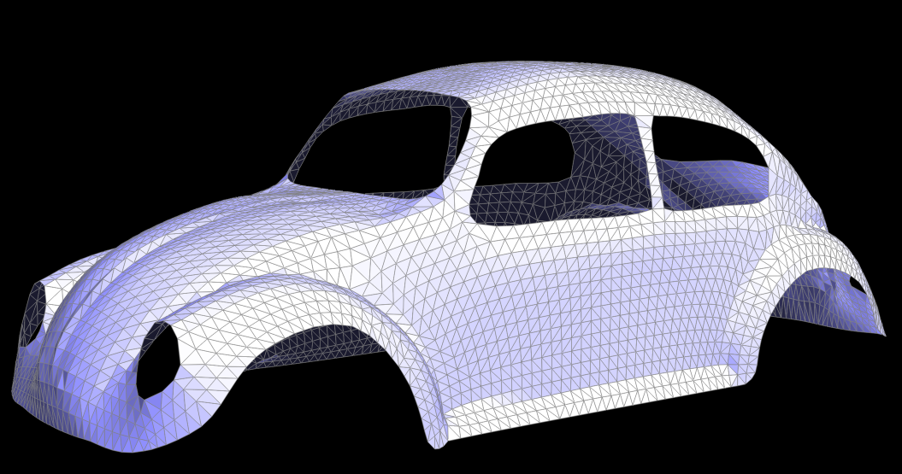 |
|
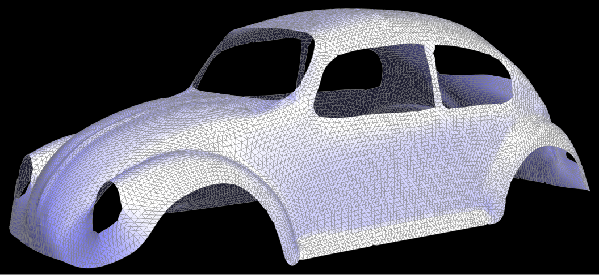 |
|
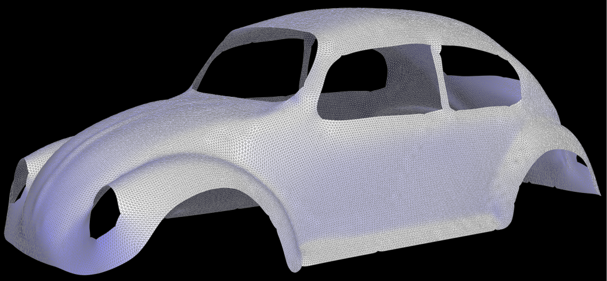 |
I chose to also implement \(\sqrt{3}\)-Subdivision. This involved modifying
halfEdgeMesh.h to include a new method called splitFace,
which splits a face into three at its centroid, as well as adding the fields
newPosition and isNew to the Face class
to support this new subdivision. I've also added more
code to MeshResampler::upsample so that I can switch between
Loop and \(\sqrt{3}\)-Subdivision using a boolean and an if statement.
The implementation is based off of what is described in this paper:
graphics.rwth-aachen.de/media/papers/sqrt31.pdf
The paper linked above does a better job going into detail and includes a helpful diagram which I've screenshotted below. Essentially, the algorithm first splits all faces in the mesh, inserting a vertex at its centroid. Secondly, the algorithm flips all original edges in the mesh, excluding boundary edges. This results in the final subdivision.
|
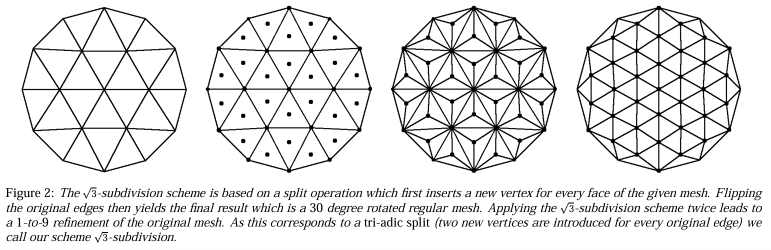 |
To implement this, I built off of the implementation for Loop subdivision since
\(\sqrt{3}\)-Subdivision uses a very similar process. As such, I needed to make a function
to help split faces instead of edges, which resulted in HalfedgeMesh::splitFace.
I used the same principles that I stuck to when implementing HalfedgeMesh::splitEdge,
such as collecting all elements (except the original edges), creating new elements, and
lastly updating all the elements appropriately. A few differences I would like to point out are:
isNew, I also note when faces are new with their
isNew field as to avoid
continously splitting faces which were results of subdividing an old face.
Once HalfedgeMesh::splitFace was implemented, I created the case that uses
\(\sqrt{3}\)-Subdivision in MeshResampler::upsample. Much like Loop, there are
the five steps (sections): old vertices, new vertices, split, flip, and set.
The overall logic for old vertices remains identical, such as summing up neighbors and setting the
newPosition and isNew = false fields for all old vertices. The only difference is in the formula for
the position, which is now \((1 - u)v + u\frac{k}{n}\), where \(n =\) the degree of
the vertex position, \(u = \frac{4 - 2\cos(\frac{2\pi}{n})}{9}\), \(v =\) the vertex, and \(k =\) the sum of all
the positions of neighboring vertices. All these formulas come directly from the paper linked above.
The boundary vertex case remains the same.
The logic for new vertices is much simpler than Loop, as all I needed to do was iterate through
every face and set newPosition as the centroid of the face. We can traverse to all
three vertices of the face using half-edges and from there average their positions to achieve the centroid.
There is also no need to check for boundary faces as the iteration excludes them naturally.
Additionally, I set isNew for each face to be false in preparation for the splitting
phase.
Before splitting, I need to also iterate through every edge in the mesh and set isNew = false.
Once splitting occurs, we need to be able to differentiate between old edges and new edges to perform the flipping.
Splitting works the same as it does for Loop subdivision with the difference being faces instead edges being split.
I iterate through every face in the mesh and check if it's an old face using isNew. If it is,
I call splitFace and set the newPosition and isNew fields to the face's newPosition
and true respectively, just like in Loop.
Flipping is much simpler as well as all we need to do is iterate through all edges in the mesh
and check isNew. If it is false, a.k.a. an old edge, we can call
flipEdge on it.
Finally, we set the vertices to their correct positions, which is identical to Loop subdivision.
With both subdivision schemes implemented, we can compare the two below. Attached below are a few screenshots comparing them:
|
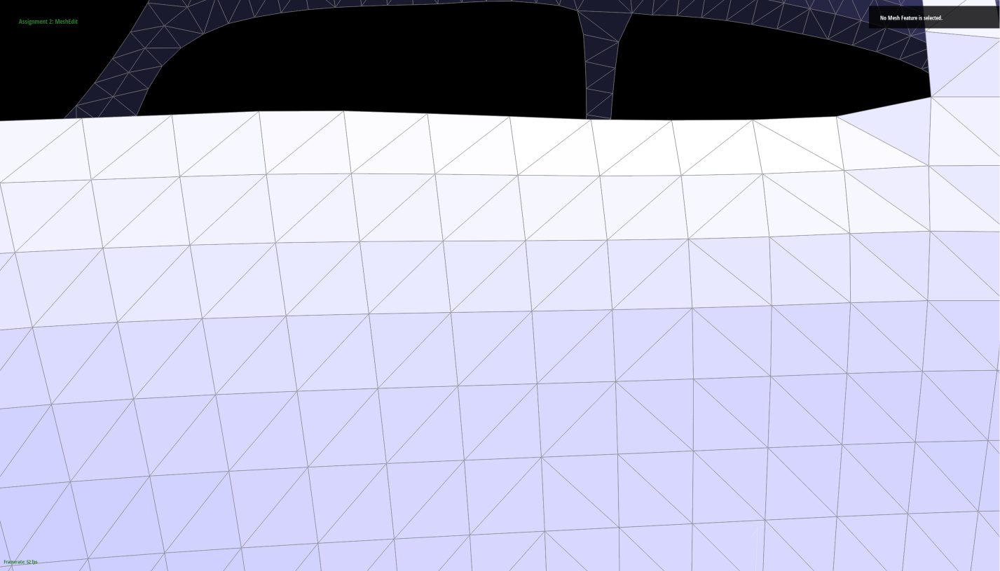 |
|
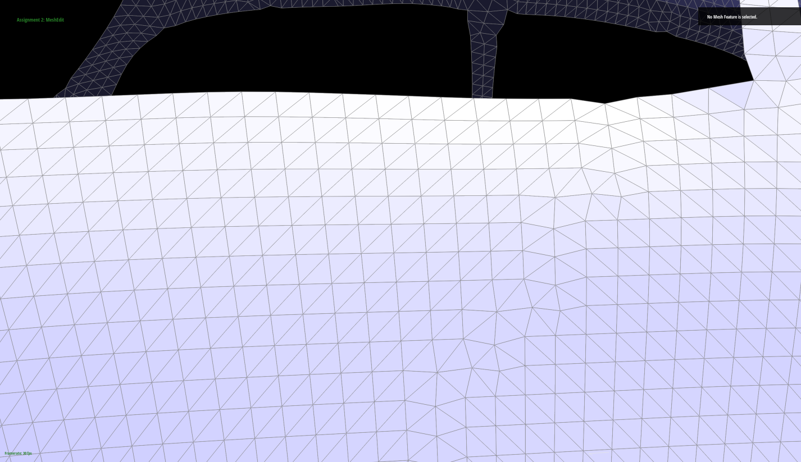 |
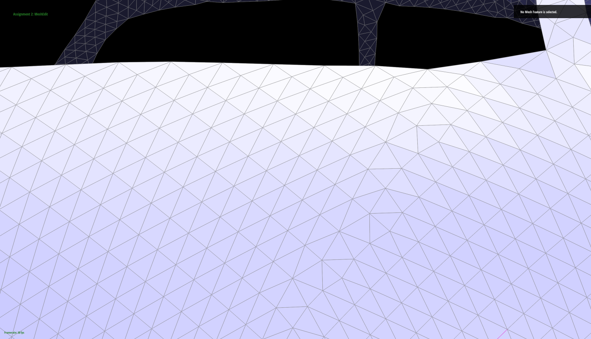 |
|
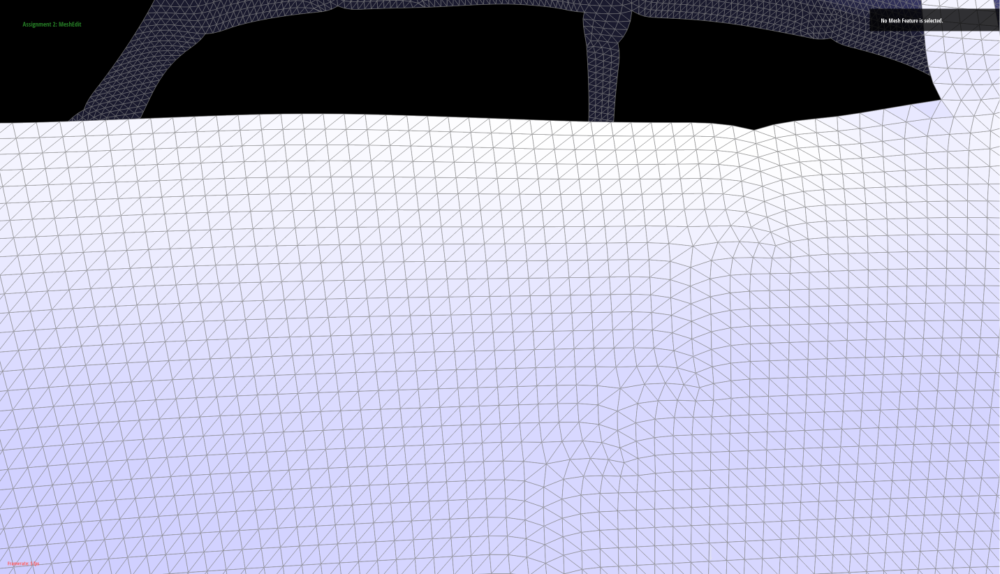 |
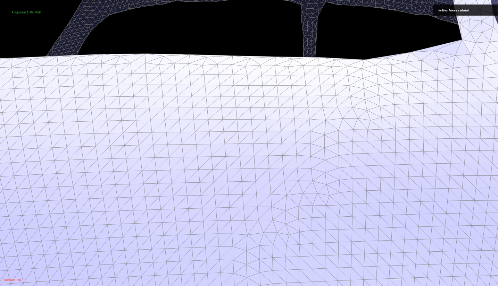 |
One main difference I observe between both subdivision schemes is that Loop appears to reach smaller triangles in fewer subdivisions than \(\sqrt{3}\)-subdivision. This makes sense given that Loop splits triangles faces into fours while \(\sqrt{3}\)-subdivision splits triangle faces into threes. Another difference is between how both handle boundaries. Faces along the boundary are subdivided the same as interior faces in Loop subdivision. In \(\sqrt{3}\)-subdivision however, the edges along the boundary remain the same, resulting in "stretched" faces along the boundaries.